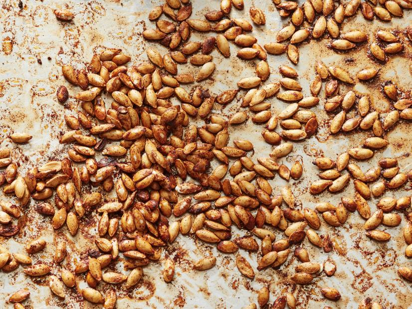

Brown Sugar Pumpkin Seeds

Pumpkin seeds
We double up the pumpkin flavor by using everyon's favorite seasonal spice blend. A touch of brown sugar
makes them into a sweet treat
Ingredients
- 2 cups raw pumpkin seeds
- 1/4 cup dark brown sugar
- 2 TBSP unsalted butter, melted
- 2 tsp pumpkin pie spice
- Pinch of kosher salt
Steps
- Preheat the oven to 300 degrees F.
- Place the pumpkin seeds in a colander and rinse away all the pulp and stringy stuff
- Spread the seeds out on a rimmed baking sheet and roast until dried out, 30 to 45 minutes.
- Toss the pumpkin seeds with sugar, butter, pumpkin pie spice, and salt in a medium bowl until evenly coated.
- Return the seeds to the baking sheet, spread them out and roast until dry, about 35 minutes
- Let cool, then break up into pieces before serving